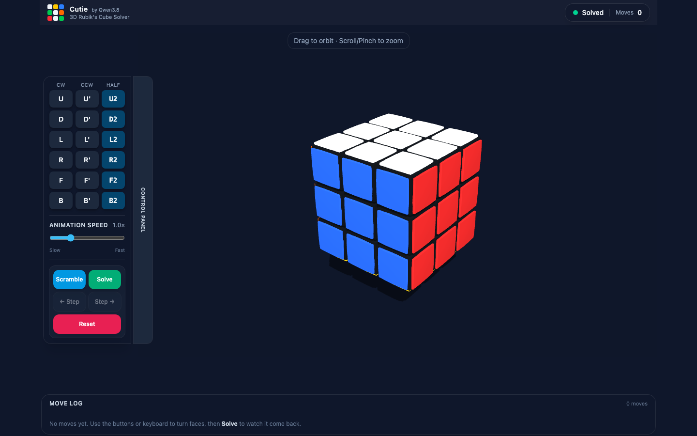
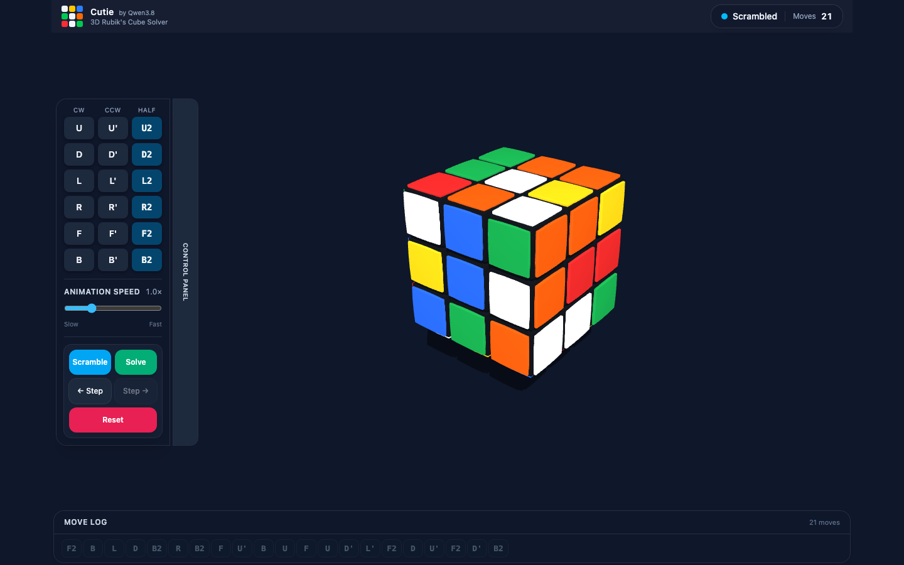
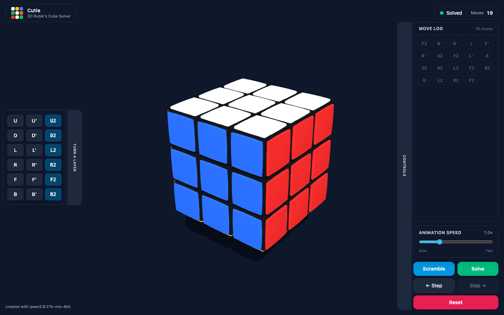
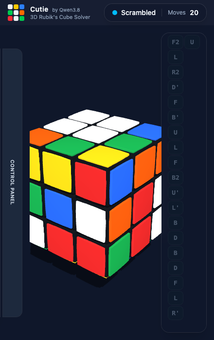

A single-file, client-side 3D Rubik's Cube solver powered by Three.js and cubejs. The first three shots trace a full solve — from a clean cube, through a scramble, back to solved — and the fourth shows the narrow-tall layout with the Move Log re-docked to the right edge.

The starting state: a fully-solved cube, each face one solid color, status Solved, move counter at zero. On a wide screen the control panel drawer opens by default (tap its tab — or press C — to close it); the Move Log panel at the bottom is always visible.

A random scramble shuffles the cube into a mixed state. The status indicator flips to Scrambled and the Move Log at the bottom shows the whole sequence as move-buttons in wrapping rows (they wrap at the panel width), the control panel drawer still open around the cube.

cubejs finds a short solution and the cube animates step-by-step back to order. Status returns to Solved, and the Move Log at the bottom shows the full solution as move-buttons in wrapping rows (they wrap at the panel width), the control panel drawer still open.

A 440×700 viewport puts the stage at or under the 784px right-dock height, so the Move Log re-docks to the right edge as a headerless card (no title or count in the docked band): move-buttons fill its columns top to bottom (16px clearances, no scrollbar while they fit), and the columns grow as moves accumulate — the card widens from 58px (one column) to 194px (five), re-centering the cube in the remaining space. At 440px wide the stage is ≤ 750px, so the control panel starts closed — its tab peeks in from the left. Above 784px the log bottom-docks.